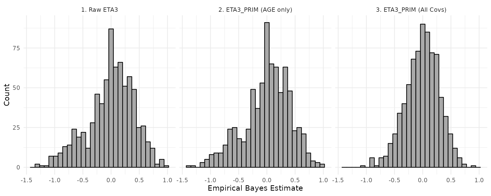
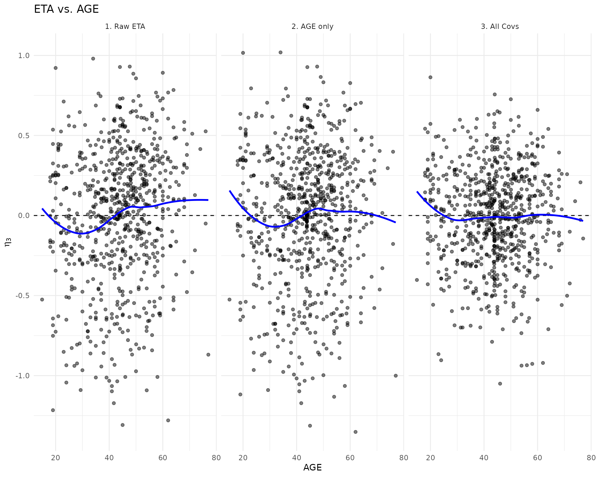
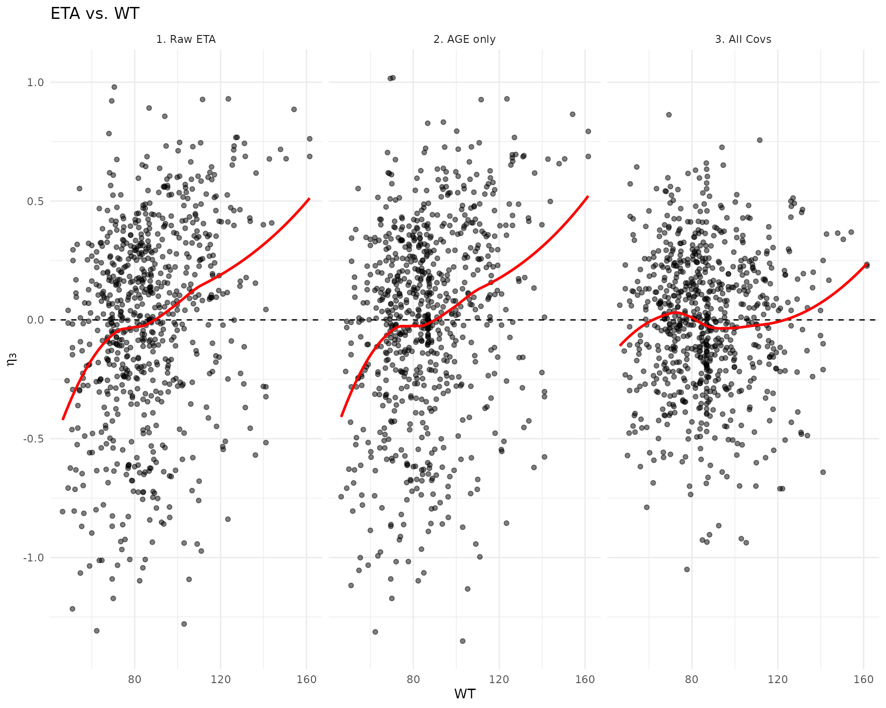
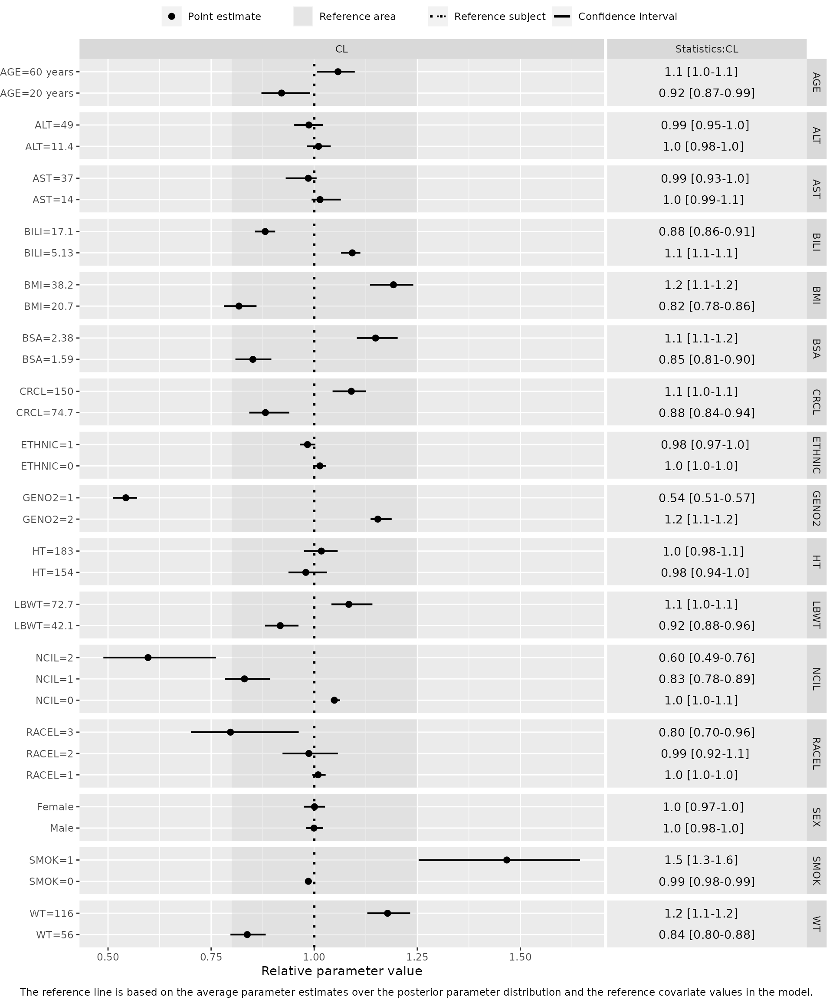
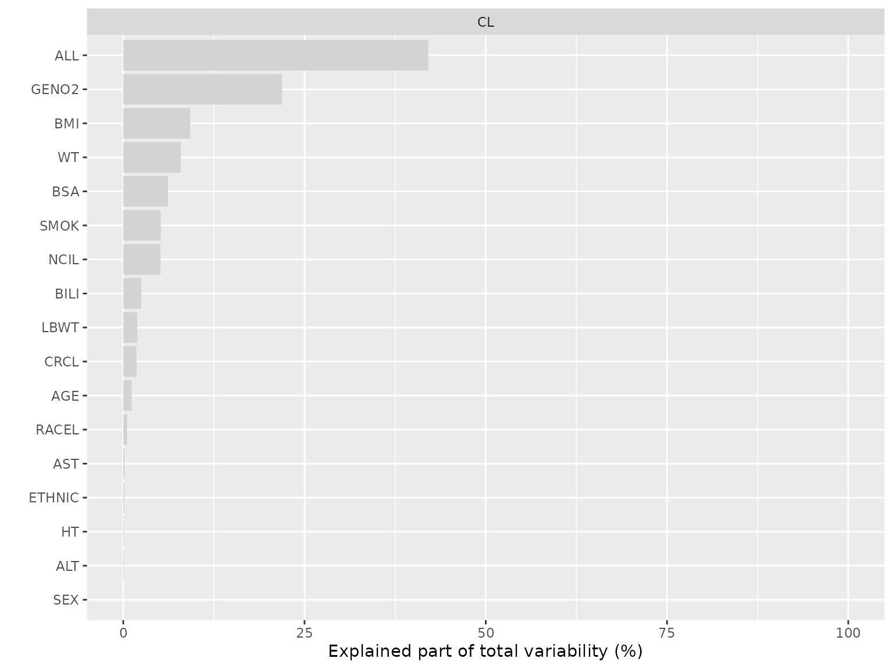

Walk-through: Key PMXFrem functionality
walk-trough.RmdThis Walk-Through builds upon the fundamentals introduced in the Quick-Start vignette. It is designed for pharmacometricians constructing robust, reproducible FREM workflows. Here, we move beyond the “happy path” to address real-world execution: customizing diagnostics for standard reporting, extracting and formatting parameter tables, and efficiently updating a converged FREM model—such as adding or dropping covariates—without needing to restart the underlying PsN workflow.
1. Setup and Base Context
We begin with a base estimation model and a converged FREM model. This FREM model file could have been generated using PsN’s frem command or natively via the PMXFrem::createFREMmodel() function.
For this tutorial, we will use the built-in SimNeb simulated datasets, which also include pre-computed bootstrap results for the FREM model to facilitate uncertainty derivation.
library(PMXFrem)
library(dplyr)
library(ggplot2)
# Define paths to example data and converged models
modDevDir <- system.file("extdata", "SimNeb", package = "PMXFrem")
mod_path <- file.path(modDevDir, "run31.mod")
ffemData <- system.file("extdata", "SimNeb/DAT-2-MI-PMX-2-onlyTYPE2-new.csv", package = "PMXFrem")
# Define the path to the bootstrap raw results
bs_file <- file.path(modDevDir, "bs31.dir/raw_results_run31.csv")
# Isolate outputs to a temporary directory to comply with CRAN policies
td <- tempdir()
# Common model attributes for SimNeb
run_frem <- 31
run_base <- 30
n_non_frem <- 7
n_skip_om <- 2
par_names <- c("CL", "V", "MAT")2. Conversion to FFEM
While the FREM parameterization is statistically highly efficient for estimation, its structure is not natively compatible with standard post-processing tasks like Visual Predictive Checks (VPCs) or traditional Empirical Bayes Estimate (EBE) Goodness-of-Fit (GOF) plots.
To conduct these analyses, the FREM model must be converted into a Full Fixed Effects Model (FFEM). The createFFEMmodel() function handles this automatically by: 1. Calculating the total impact of covariates for each individual (the Individual Covariate Coefficients, or ICCs). 2. Appending these ICCs as new columns in the dataset. 3. Modifying the NONMEM control stream to additively apply these ICCs directly to the structural ETAs. 4. Setting $ESTIMATION METHOD=1 INTER MAX=0.
The resulting files are immediately ready to be executed in NONMEM to generate predictions or simulations.
# 1. Generate the FFEM artifacts
ffemMod <- createFFEMmodel(
runno = run_frem,
baserunno = run_base,
modDevDir = modDevDir,
dataFile = ffemData,
parNames = par_names,
numNonFREMThetas = n_non_frem,
numSkipOm = n_skip_om,
newDataFile = file.path(td, "vpcData31.csv"),
ffemModName = file.path(td, "run31_ffem.mod"),
quiet = TRUE
)
# 2. Inspect the new dataset for the added ICCs
# By default, PMXFrem appends "FREMCOV" to the parameter names.
ffem_data_out <- read.csv(file.path(td, "vpcData31.csv")) %>% distinct(ID,.keep_all=T)
head(ffem_data_out[, c("ID", "CLFREMCOV", "VFREMCOV", "MATFREMCOV")])
#> ID CLFREMCOV VFREMCOV MATFREMCOV
#> 1 1 -0.15212665 -0.1443333 -0.09096996
#> 2 13 0.54635339 0.3433692 0.06212639
#> 3 19 -0.06766357 -0.2907388 -0.01632902
#> 4 25 -0.04127076 -0.2446109 -0.01551476
#> 5 31 -0.54289066 -0.5240197 0.09138346
#> 6 37 0.66208812 0.5840938 0.07593608
# 3. Inspect the modified NONMEM control stream
# The $INPUT record now expects the newly generated ICCs...
cat(ffemMod[8:11], sep="\n")
#> $INPUT NO ID STUDYID TAD TIME DAY AMT RATE ODV DV EVID BLQ DOSE
#> FOOD FORM TYPE WT HT LBWT BSA SEX RACE AGE AST ALT BILI
#> CRCL BMI NCI GENO2 ETHNIC SMOK RACEL NCIL
#> CLFREMCOV VFREMCOV MATFREMCOV
# ...and the structural ETAs are now additively shifted by the ICCs in the code
cat(ffemMod[49:51], sep="\n")
#> CL = EXP(MU_3 + (ETA(3)+CLFREMCOV))
#> V = EXP(MU_4 + (ETA(4)+VFREMCOV))
#> MAT = MATCOVTIME * EXP(MU_5 + (ETA(5)+MATFREMCOV))
# ... with updated estimation settings
cat(ffemMod[80], sep="\n")
#> $ESTIMATION METHOD=1 INTER MAX=02.1 Subsetting Covariates for FFEM Conversion
In some workflows, you may want to evaluate the predictive performance of a sub-model (e.g., generating a VPC that only accounts for the effects of AGE and SEX) without taking the time to re-estimate a completely new base model.
You can instruct createFFEMmodel() to restrict the FFEM conversion to a specific subset of the full FREM covariates using the availCov argument. The function dynamically recalculates the partial ICCs based on the estimated variance-covariance matrix.
# Generate an FFEM model considering only the 'AGE' covariate effect
ffemMod_age <- createFFEMmodel(
runno = run_frem,
baserunno = run_base,
modDevDir = modDevDir,
dataFile = ffemData,
parNames = par_names,
numNonFREMThetas = n_non_frem,
numSkipOm = n_skip_om,
availCov = c("AGE"),
newDataFile = file.path(td, "vpcData31_age.csv"),
ffemModName = file.path(td, "run31_ffem_age.mod"),
quiet = TRUE
)
# Inspect the dataset to verify the ICCs differ from the full model
ffem_data_age <- read.csv(file.path(td, "vpcData31_age.csv")) %>% distinct(ID,.keep_all=T)
head(ffem_data_age[, c("ID", "CLFREMCOV", "VFREMCOV", "MATFREMCOV")])
#> ID CLFREMCOV VFREMCOV MATFREMCOV
#> 1 1 -0.01910483 -0.02476108 -0.002278385
#> 2 13 -0.09833527 -0.12744874 -0.011727166
#> 3 19 0.00000000 0.00000000 0.000000000
#> 4 25 -0.09041223 -0.11717997 -0.010782288
#> 5 31 -0.05475853 -0.07097052 -0.006530336
#> 6 37 -0.01514331 -0.01962669 -0.001805946The ICCs are different now since the covariate coefficients adjust to the set of covariates included in the generation of the FFEM model. The ICCs for ID 19 are 0 since AGE is missing for this subject.
3. ETA Plots (Conditional Empirical Bayes Estimates)
Standard Empirical Bayes Estimates (EBEs, or \(\eta\)) extracted directly from a FREM model do not reflect the individualized impact of covariates. To evaluate structural misspecification or remaining parameter trends, we must compute conditionally adjusted ETAs (\(\eta^\prime\)).
Because \(\eta^\prime\) is mathematically derived from the covariates included in the FFEM conversion, its distribution depends entirely on which covariates are considered. We will demonstrate this by calculating \(\eta^\prime\) twice: once adjusting only for AGE, and once adjusting for all covariates in the model.
# 1. Extract conditional ETAs adjusting for ALL covariates
etaTabAll <- calcEtas(
runno = run_frem,
modDevDir = modDevDir,
dataFile = read.csv(ffemData),
parNames = par_names,
numNonFREMThetas = n_non_frem,
numSkipOm = n_skip_om,
availCov = "all",
quiet = TRUE
)
# 2. Extract conditional ETAs adjusting for AGE only
etaTabAge <- calcEtas(
runno = run_frem,
modDevDir = modDevDir,
dataFile = read.csv(ffemData),
parNames = par_names,
numNonFREMThetas = n_non_frem,
numSkipOm = n_skip_om,
availCov = "AGE",
quiet = TRUE
)3.1 Comparing ETA Distributions
First, let’s examine how the overall variance shrinks as we account for covariates. The raw \(\eta_3\) (representing variability on MAT) contains all covariate-induced variability. Adjusting for AGE alone reduces this variance slightly, but adjusting for the full multivariate FREM model shrinks the distribution to its true, unexplained residual variability.
# Combine data for faceted plotting
hist_data <- bind_rows(
etaTabAll %>% select(ID, VALUE = ETA3) %>% mutate(Adjustment = "1. Raw ETA3"),
etaTabAge %>% select(ID, VALUE = ETA3_PRIM) %>% mutate(Adjustment = "2. ETA3_PRIM (AGE only)"),
etaTabAll %>% select(ID, VALUE = ETA3_PRIM) %>% mutate(Adjustment = "3. ETA3_PRIM (All Covs)")
)
ggplot(hist_data, aes(x = VALUE)) +
geom_histogram(bins = 30, fill = "darkgray", color = "black") +
facet_wrap(~Adjustment, scales = "fixed") +
theme_minimal() +
labs(x = "Empirical Bayes Estimate", y = "Count")
3.2 Multivariate vs. Univariable Trend Correction
A univariable model (adjusting only for AGE) will be able to remove the trend for its own covariate, but will be less able to remove trends for other covariate, depending on how correlated they are. The full FFEM model accounts for all covariates and will therefore account for trends across covariates.
To see this in action, let’s plot the raw, unadjusted ETAs (\(\eta\)) alongside our two conditional ETAs (\(\eta^\prime\)) against both AGE and WT.
# Combine data for scatter plots, mapping the appropriate ETA column to 'VALUE'
scatter_data <- bind_rows(
etaTabAll %>% select(ID, AGE, WT, VALUE = ETA3) %>% mutate(Model = "1. Raw ETA"),
etaTabAge %>% select(ID, AGE, WT, VALUE = ETA3_PRIM) %>% mutate(Model = "2. AGE only"),
etaTabAll %>% select(ID, AGE, WT, VALUE = ETA3_PRIM) %>% mutate(Model = "3. All Covs")
) %>%
mutate(Model = factor(Model, levels = c("1. Raw ETA", "2. AGE only", "3. All Covs")))
# Plot against AGE
p_age <- ggplot(scatter_data, aes(x = AGE, y = VALUE)) +
geom_point(alpha = 0.5) +
geom_hline(yintercept = 0, linetype = "dashed") +
geom_smooth(method = "loess", se = FALSE, color = "blue") +
facet_wrap(~Model) +
theme_minimal() +
labs(y = expression(eta[3]), title = "ETA vs. AGE")
# Plot against WT
p_wt <- ggplot(scatter_data, aes(x = WT, y = VALUE)) +
geom_point(alpha = 0.5) +
geom_hline(yintercept = 0, linetype = "dashed") +
geom_smooth(method = "loess", se = FALSE, color = "red") +
facet_wrap(~Model) +
theme_minimal() +
labs(y = expression(eta[3]), title = "ETA vs. WT")
# Display plots (if the patchwork package is available, use p_age / p_wt)
p_age
#> `geom_smooth()` using formula 'y ~ x'
p_wt
#> `geom_smooth()` using formula 'y ~ x'
Notice the progression:
-
Raw ETA: Residual trends exist for both
AGEandWT. -
AGE only: The adjustment successfully flattens the trend against
AGE, but residual trend remains when plotted againstWT(sinceWTis not included in the FFEM model andWTandAGEare not particularly correlated). - All Covs: The full FREM adjustment flattens the trend across both covariates.
4. Parameter Estimates Table
While visual diagnostics are crucial, CRO reporting standardly requires a tabulated summary of the base model structural parameters alongside the adjusted variance estimates (\(\Omega^\prime\)) and residual errors (\(\Sigma\)). The fremParameterTable() function computes these estimates and derives their relative standard errors (RSE) from bootstrap results.
By supplying custom labels via the thetaLabels, omegaLabels, and sigmaLabels arguments, we can immediately map internal NONMEM parameter indices to human-readable names.
bsFile <- file.path(modDevDir, "bs31.dir/raw_results_run31.csv")
# 1. Generate the Parameter Table with Custom Labels
parTableData <- fremParameterTable(
runno = run_frem,
modDevDir = modDevDir,
numNonFREMThetas = n_non_frem,
numSkipOm = n_skip_om,
thetaNum = 2:7,
omegaNum = c(1, 3, 4, 5),
sigmaNum = 1,
thetaLabels = c("CL (L/h)", "V (L)", "MAT (h)", "D1 (h)", "Food on Frel", "Food on MAT"),
omegaLabels = c("IIV on RUV", "IIV on CL", "IIV on V", "IIV on MAT"),
sigmaLabels = c("Proportional RUV"),
includeRSE = TRUE,
bsFile = bsFile,
quiet = TRUE
)
# Inspect the raw data frame output
head(parTableData$parameterTable)
#> Type Parameter Estimate RSE (%)
#> 1 THETA CL (L/h) 6.1500 1.48
#> 2 THETA V (L) 123.0000 1.90
#> 3 THETA MAT (h) 1.8900 2.32
#> 4 THETA D1 (h) 0.6700 0.16
#> 5 THETA Food on Frel -0.0522 56.00
#> 6 THETA Food on MAT 0.1210 14.40Note: Just as we generated an AGE-only FFEM model in Section 2 using the availCov argument, fremParameterTable() also accepts availCov. Supplying availCov = "AGE" would generate a parameter table showing the partial reduction in \(\Omega^\prime\) when adjusting for AGE alone. We leave this as an exercise for the user to explore.
4.1 Formatting for Reporting
To elevate the raw data frame into a document-ready format, we can pass it directly into a table-formatting package. Here, we use kableExtra, which seamlessly handles HTML grouping for vignette and pkgdown compilation.
library(kableExtra)
# 2. Format the table for CRO reporting, removing the redundant 'Type' column
parTableData$parameterTable %>%
select(-Type) %>%
kbl(
col.names = c("Parameter", "Estimate", "RSE (%)"),
digits = 3,
align = c("l", "c", "c"),
caption = "<b>FREM Parameter Estimates</b><br>Conditional estimates based on all covariates",
escape = FALSE # Allows HTML in the caption
) %>%
kable_classic(full_width = FALSE, html_font = "Arial") %>%
row_spec(0, bold = TRUE)| Parameter | Estimate | RSE (%) |
|---|---|---|
| CL (L/h) | 6.150 | 1.48 |
| V (L) | 123.000 | 1.90 |
| MAT (h) | 1.890 | 2.32 |
| D1 (h) | 0.670 | 0.16 |
| Food on Frel | -0.052 | 56.00 |
| Food on MAT | 0.121 | 14.40 |
| IIV on RUV (SD) | 0.233 | 7.32 |
| IIV on CL (SD) | 0.255 | 3.50 |
| IIV on V (SD) | 0.228 | 4.54 |
| IIV on MAT (SD) | 0.206 | 8.65 |
| Proportional RUV (SD) | 0.176 | 1.27 |
4.2 Covariate Coefficients Table
In addition to the base model parameters, it is often of interest to have a tabulated summary of the covariate coefficients (the mathematical effects of each covariate on the structural parameters).
Because the coefficient matrix can become quite large (\(Parameters \times Covariates\)), fremParameterTable() automatically generates a document-ready, wide-format table (coefficientTable_wide). We can also dynamically switch the uncertainty metric to 90% Confidence Intervals and control the significant digits to conserve horizontal page space.
# 1. Generate the table data, requesting 95% CIs and 3 significant digits
parTableDataCI <- fremParameterTable(
runno = run_frem,
modDevDir = modDevDir,
numNonFREMThetas = n_non_frem,
numSkipOm = n_skip_om,
thetaNum = 2:7,
omegaNum = c(1, 3, 4, 5),
sigmaNum = 1,
thetaLabels = c("CL (L/h)", "V (L)", "MAT (h)", "D1 (h)", "Food on Frel", "Food on MAT"),
parNames = c("CL", "V", "MAT"), # Explicitly label the structural parameters
includeRSE = TRUE,
uncertainty = "CI", # Toggle to Confidence Intervals
ciLevel = 0.90, # 90% CI
sigDigs = 3, # Lock to 3 significant digits
bsFile = bsFile,
seed = 123, # Ensure reproducibility
quiet = TRUE
)
# 2. Extract the wide table and format with kableExtra
parTableDataCI$coefficientTable_wide %>%
kbl(
align = c("l", rep("c", ncol(parTableDataCI$coefficientTable_wide) - 1)),
caption = "<b>Conditional Covariate Coefficients</b><br>Estimates [90% CI]",
escape = FALSE
) %>%
kable_classic(full_width = FALSE, html_font = "Arial") %>%
row_spec(0, bold = TRUE) %>%
column_spec(1, bold = TRUE) # Bold the Covariate column for readability| Covariate | CL | V | MAT |
|---|---|---|---|
| WT | -0.00591 [-0.0239 - 0.0107] | -0.0265 [-0.0473 - -0.00357] | 0.00556 [-0.0268 - 0.0173] |
| HT | -0.0287 [-0.0512 - -0.00640] | -0.0279 [-0.0589 - 0.00507] | -0.0102 [-0.0637 - 0.0175] |
| LBWT | -0.0181 [-0.0413 - -0.00145] | -0.0111 [-0.0434 - 0.0127] | -0.000679 [-0.0397 - 0.0204] |
| BSA | 2.75 [0.549 - 5.82] | 4.01 [0.274 - 7.75] | 0.202 [-2.41 - 5.90] |
| AGE | 0.00215 [-0.00141 - 0.00478] | -0.000617 [-0.00371 - 0.00304] | 0.00319 [-0.000533 - 0.00883] |
| AST | -0.00466 [-0.0136 - -0.00110] | 0.000291 [-0.00615 - 0.00364] | -0.00894 [-0.0177 - -0.00363] |
| ALT | 0.00427 [0.00196 - 0.00942] | 0.000161 [-0.00227 - 0.00467] | 0.00616 [0.00231 - 0.0114] |
| BILI | 0.00201 [-0.00719 - 0.0130] | 0.000162 [-0.00883 - 0.0116] | 0.00228 [-0.00593 - 0.0142] |
| CRCL | 0.00117 [-0.00108 - 0.00276] | -0.000471 [-0.00204 - 0.00147] | 0.00189 [-0.000167 - 0.00455] |
| BMI | -0.0500 [-0.0935 - -0.00330] | -0.0146 [-0.0777 - 0.0466] | -0.0274 [-0.134 - 0.0241] |
| SEX | -0.168 [-0.341 - -0.0376] | 0.153 [-0.0516 - 0.313] | -0.0419 [-0.346 - 0.119] |
| RACEL_3 | 0.00281 [-0.120 - 0.108] | 0.0197 [-0.103 - 0.134] | 0.0160 [-0.104 - 0.166] |
| RACEL_2 | 0.00800 [-0.0647 - 0.0655] | 0.00167 [-0.0757 - 0.0746] | 0.0392 [-0.000414 - 0.144] |
| NCIL_2 | -0.517 [-0.857 - -0.309] | -0.0215 [-0.372 - 0.188] | -0.174 [-0.535 - 0.0171] |
| NCIL_1 | -0.238 [-0.356 - -0.124] | 0.0227 [-0.101 - 0.125] | -0.106 [-0.234 - -0.0339] |
| GENO2 | 0.737 [0.684 - 0.802] | 0.734 [0.675 - 0.793] | 0.0128 [-0.0600 - 0.0902] |
| ETHNIC | -0.0533 [-0.111 - -0.00837] | -0.0631 [-0.133 - -0.0400] | -0.0158 [-0.0767 - 0.0414] |
| SMOK | 0.367 [0.215 - 0.457] | 0.250 [0.0844 - 0.394] | 0.0664 [-0.0410 - 0.166] |
5. Covariate Effects (Forest Plots)
Forest plots are useful for visualizisation of the unconditional (univariable) impact of covariates from FREM models. Note that these unconditional effects are not the same as the conditional effects tabulated above. We generate the covariate data frame, dynamically apply (some) labels, and plot using the PMXForest package.
cov_names <- getCovNames(mod_path)
data <- data.table::fread(ffemData)
# 1. Setup Covariate Statistics
dfCovsForest <- PMXForest::createInputForestData(
PMXForest::getCovStats(data, cov_names$orgCovNames, probs = c(0.05, 0.9), missVal = -99),
iMiss = -99
)
# 2. Dynamically Format Labels (Mapping units and categorical text)
unit_map <- c(AGE = "years")
label_map <- c("SEX=1" = "Male", "SEX=2" = "Female")
formatted_labels <- generateCovNames(dfCovsForest, unit_map, label_map)
# 3. Define the structural parameter relationship
paramFun <- function(basethetas, covthetas, dfrow, ...) {
basethetas[2] * exp(covthetas[1])
}
# 4. Pull Bootstrap Samples for Uncertainty
extFile <- file.path(modDevDir, "run31.ext")
samples <- PMXForest::getSamples(bsFile, extFile = extFile, n = 50)
# 5. Generate and Plot Forest Data
dfresFREM <- getForestDFFREM(
dfCovs = dfCovsForest,
cdfCovsNames = formatted_labels,
covNames = cov_names$covNames,
functionList = list(paramFun),
functionListName = "CL",
numNonFREMThetas = n_non_frem,
numSkipOm = n_skip_om,
dfParameters = samples,
quiet = TRUE
)
PMXForest::forestPlot(dfresFREM, parameters = "CL")
Note: This section covers the standard implementation. For the gory details on plot customization, overriding point functions, or complex grouping, please refer to the specialized vignette: Deep-Dive: Advanced Forest Plots with PMXForest.
6. Visualizing Explained Variability
A unique capability of FREM is plotting the amount of observed variability explained by each covariate without needing to re-estimate models iteratively. We use getExplainedVar() to calculate these fractions and visualise them using plotExplainedVar().
# 1. Setup the covariate matrix
dfCovsEV <- setupdfCovs(mod_path, fremCovs = cov_names$orgCovNames)
# 2. Define function including ETAs
funcList_var <- list(
function(basethetas, covthetas, dfrow, etas, ...) {
basethetas[2] * exp(covthetas[1] + etas[3])
}
)
# 3. Calculate Explained Variability
dfres_var <- getExplainedVar(
type = 1, # EBE-based method
data = data,
dfCovs = dfCovsEV,
cstrCovariates = c("ALL", cov_names$orgCovNames),
numNonFREMThetas = n_non_frem,
numSkipOm = n_skip_om,
functionList = funcList_var,
functionListName = "CL",
modDevDir = modDevDir,
runno = run_frem,
numETASamples = 25,
quiet = TRUE,
seed = 123
)
plotExplainedVar(dfres_var, parameters = "CL", maxVar = 1) + xlim(NA, 100)
7. Model Revision (Updating FREM)
If you need to iteratively add or remove covariates, or simply update initial estimates from a previous run (in case PsN’s update_inits tool doesn’t work for a large FREM model), use the updateFREMmodel() function.
The example below demonstrates a simple update of initial estimates natively from an .ext file.
# Example: Updating initial estimates without generating new data
newFrem <- updateFREMmodel(
strFREMModel = mod_path,
strUpdateType = "NoData",
basenames_th = c("CL", "V", "MAT", "D1", "FRELFOOD", "MATFOOD"),
basenames_om = c("RUV", "D1", "CL", "V", "MAT"),
numNonFREMThetas = n_non_frem,
numSkipOm = n_skip_om,
bWriteData = FALSE,
bWriteMod = TRUE,
bWriteFIX = TRUE,
quiet = FALSE
)
# newFrem$model now contains the adjusted NONMEM control stream.Note: For a comprehensive guide on adding and removing new covariates and managing dataset alignment please refer to the specialized vignette: Deep-Dive: Updating and Revising FREM Models. ```